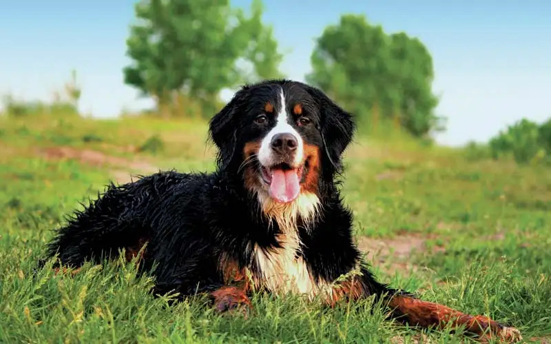
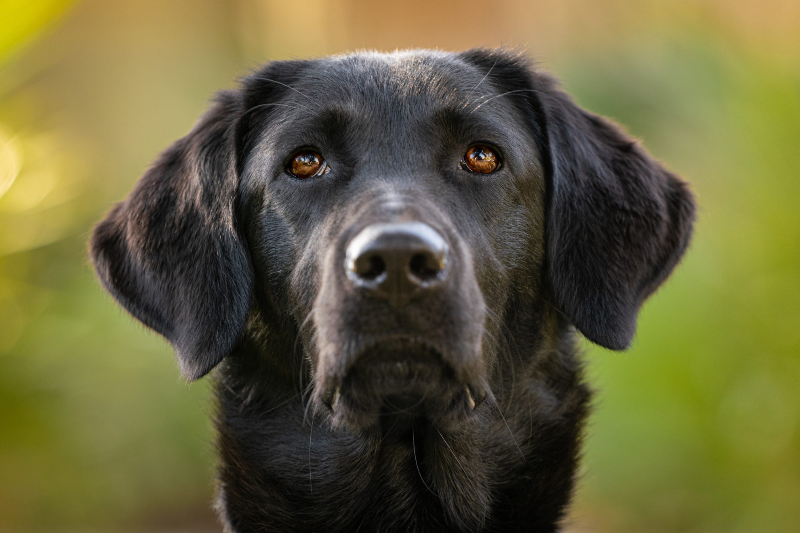
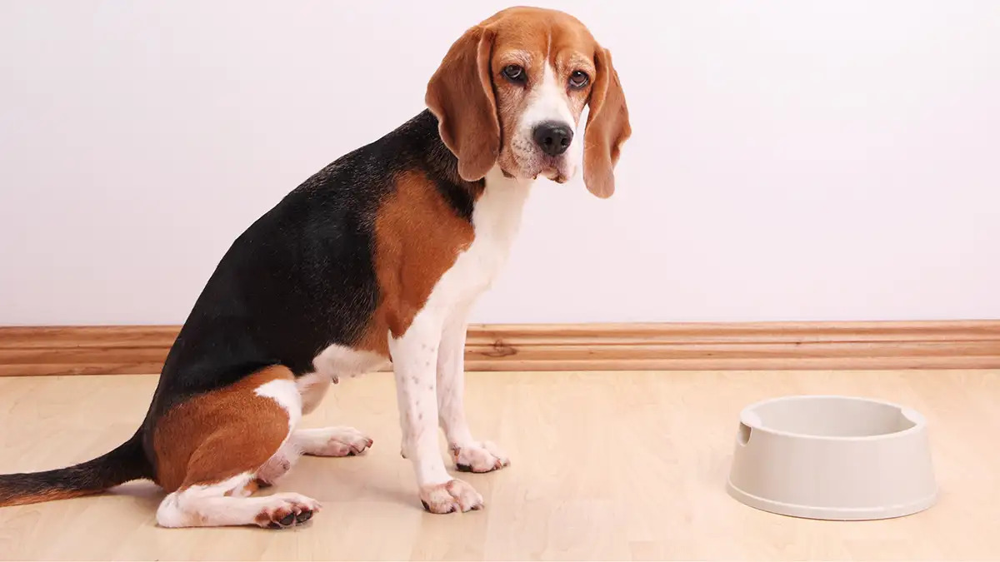

Divina
Essa Bernese de 3 aninhos pode ser sua melhor amiga! Brincalhona, amigável e muito obediente. É só dar amor, que ela te dará também.
Lloyd
Esse pug de 6 meses é muito carinhoso e vai te seguir por todos os lados, dormir contigo e precisa de muito afeto.

Boy
Esse labrador de 2 anos é muito ativo e nunca se cansa de brincar. Adora passeios no parque e correr atrás de brinquedos. Você é uma pessoa ativa? Pode deixar que ele te acompanha.

Felix
Esse Beagle de 8 meses é o seu melhor companheiro. Adora assistir desenhos debaixo da coberta, mas também não rejeita um banho de piscina num dia de sol. Pode contar com ele pra tudo.